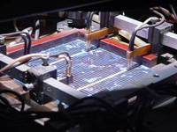
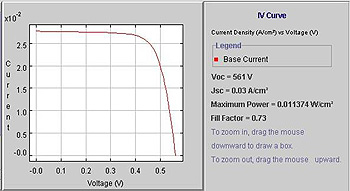

CURRENT-VOLTAGE (IV) CHARACTERISTICS
At the completion of the manufacturing process, all solar cells are electrically tested to determine their current-voltage relationship. It is important that all cells be graded and sorted so as to minimise subsequent mismatch between cells when they are encapsulated into modules. Electrical testing in general involves measuring the current able to be generated by the solar cell for each particular operating voltage across its terminals. During this test, a large number of data points are therefore generated which when put together form a graph of current versus voltage which is known as the I-V characteristic curve. At one extreme, the solar cell is short circuited with the corresponding current generation known as the short circuit current. At the other extreme where the curve intersects with the voltage axis, zero current flows and hence the voltage measured at this point is known as the open circuit voltage. Of greater importance, however, are the current and voltage at the maximum power point. These are the conditions under which the solar cell is operating at his highest possible efficiency and therefore generating most output power. This point occurs in the vicinity of the knee in the curve and clearly, the squarer the curve, the higher the output power. For comparison purposes between devices, the relative squareness of the curves is known as the fill factor which is defined as being the maximum power point current (Imp) multiplied by the maximum power point voltage (Vmp) divided by the product of the short circuit current and open circuit voltage.
|  | In the final electrical testing of each cell, the short circuit current, open circuit voltage, Imp, Vmp and the fill factor are all determined. It is often also important to know the parasitic resistance values with the total device series resistance and the corresponding shunt resistance also determined through these testing procedures. |
In general, the slope of the curve in the vicinity of the short circuit conditions gives a direct indication of the shunt resistance value. For example, in a good solar cell, the curve in this region is likely to be very close to the horizontal indicating a very high shunt-resistor value. A good approximation of the shunt resistor value is dV/dI in this region of the curve. At the other extremity of the curve near the open circuit conditions, the slope gives information regarding the series resistance of the device. The determined value, however, represents the total series resistance of the device which includes the metal/silicon contact resistance at both surfaces, the substrate resistance, the resistive losses within both metal contacts and also the lateral resistance losses associated with the lateral current flows in the emitter. Separate tests can, however, be applied to independently determine some of these components such as through the “silver metal resistance test“ or the “substrate resistivity test“.
Another parameter that can be determined as part of the electrical testing is known as the ideality factor “n“. In good devices, this parameter is close to unity although with devices incurring damage in the junction region, this ideality factor can increase and even approach two in extreme cases. The consequence of a high n-factor is that the fill factor declines. Junction recombination can result for various possible reasons such as plasma-etched damage in the region of the edges, or metal being driven into the junction region during contact formation.
The figure above shows a typical testing station in which the solar cells are measured under the solar simulator and then sorted into one of typically 14 categories. Within each category, cells are closely matched in their electrical parameters, particularly from the perspective of their short circuit current. The currents of the cells need to be closely matched since, in general, manufacturers interconnect cells in series to produce modules. The solar simulator is calibrated to a light intensity of 100 mW/cm2 and uses a precise spectrum equivalent to air mass 1.5. Reference cells that have been accurately calibrated are used to set the light intensity and to carry out periodic checks to ensure the light intensity has not drifted away from the specified intensity. Standard test conditions also involve holding the cell at 25oC, which is done via a temperature-controlled block onto which the solar cell is placed for testing. Below is a typical current-voltage characteristic curve for a screen-printed solar cell.

Figure: Typical IV curve for a solar cell